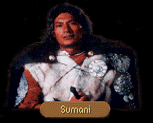

|
|
|  |
|
|
| CHAPTER 1 - FIRST | CHAPTER 1 - SECOND |
|
Sumani clapped twice. Abruptly the festive mood of the room died, the clank of goblets and the scrape of plates falling silent as the bartender shuffled between benches to bow at Locklear's feet. Touching a gnarled fist to his forehead then to his heart, he spoke somberly. SUMANI: Be welcome to the Blue Wheel Inn. May you find the drinks to your liking and the company of our patrons pleasurable. If there is anything our servants or I may do, you need only ask Sumani. LOCKLEAR: Ah...honors to your house as well...Sumani... Am I correct in believing this a drinking establishment? SUMANI: So it is. We serve many of your Midkemian drinks as well as a few from the Tsuranuanni Empire as well. Perhaps I might interest you in a cup of chocha? |
Sumani responded promptly. Shuffling closer, he pitched his voice so as not to disturb others that were drinking in the tavern. SUMANI: Your will, lord?
|
| SUMANI |
LOCKLEAR: Why did you decide to come to Midkemia and open an inn, anyway? Surely you would get better business on Kelewan.SUMANI: I was not always a tavern keeper. As a soldier serving House Shinzawai under Earl Kasumi, I was trapped here when the rift gate was collapsed at the end of the Rift War. It was our belief that we would never again see our families in Tsuranuanni or the green skies of Kelewan again.
LOCKLEAR: But Tsurani warriors traditionally kill themselves if they are in danger of falling captive to an enemy.
SUMANI: This is true, lord, but the Earl informed us that we were forbidden to dispatch ourselves until given leave to do so by a Great One --- I believe in Midkemia you would call such a one a magician. Until such a time, I content myself with running the Blue Wheel Inn.
| RIFT GATES |
LOCKLEAR: I've heard that the permanent rift-gate to Kelewan is located near here. I was hoping we could get a glimpse of it.SUMANI: There would be little to see at the moment. An internal conflict has arisen in the Empire between House Acoma and House Anasati. The Assembly of Magicians have ordered a temporary interruption of transport between the Empire and the Kingdom of the Isles until such time the conflict is resolved. I have been assured the measure is temporary.
| COMBAT |
LOCKLEAR: You said you were a soldier with the Tsurani forces. Would you be interested in teaching us some of your combat techniques?SUMANI: It would be my honor, lord, but I will require a small fee for my services. If my armor were to be damaged, I would be ill prepared otherwise to pay for it's repair.
SUMANI: Seventy Five sovereigns should cover any potential harm. Is this fee acceptable?
| YES (enough) | YES (not enough) | NO |
|
LOCKLEAR:
Sounds reasonable enough to me. Deal. SUMANI: I shall meet you by the river in five minutes time. I should forewarn you, however, I sometimes seem quite different when I am armored for battle. I apologize in advance for any harm that I should do you. Locklear gaped. Striding down from the narrow doorway of the Blue Wheel Tavern was a figure that no longer bore any resemblance to a modest tavern keeper. Obviously having taken his time to refit himself, Sumani had donned a pitted suit of blue laminate armor, the greaves, breastplate and leggings all fashioned out of a light weight wood which creaked as he lumbered towards them. "Tsurani armor?" Locklear asked. Sumani adjusted his blue-plumed helm over his eyes. "I was a former Patrol Leader. The Earl Kasumi insisted that I should keep the armor given to me by House Shinzawai. Although I no longer serve in the garrison, my oath of loyalty is still to the Earl. Are you prepared for your lessons?" "Yes, I think so." A mischievous glint reflected in the Tsurani's eyes. "Then defend yourselves." Locklear motioned for a halt to the lessons as he hauled himself for the third time out of the cold LaMutian river. "Okay, mercy, uncle, whatever it is you damnable Tsurani say when you want to surrender." "Your will, lord," Sumani chuckled, already beginning to resume his modest role as a tavern keeper. "I shall meet you inside the Blue Wheel once you have dried yourselves off."
|
LOCKLEAR:
I wish that I could, but it seems that we are low on funds. SUMANI: That is regrettable. If you were willing to speak to Earl Kasumi up at the garrison, I am certain you could arrange for a wage to be paid you and then you could come back for my instruction. I think you would find it worth your while...
|
LOCKLEAR:
You're asking a bit more than I had in mind. How much can it cost to repair armor? SUMANI: My armor is Tsurani and more specifically, I would require someone of the House Shinzawai to repair it. It is the way of my world.
|
| ARMOR REPAIR |
LOCKLEAR: I don't know how much longer our armor is going to last. Any idea where we could get it repaired?SUMANI: If your armor was the same as mine, I would suggest trying the garrison, but Kingdom armor is made in a different way. I would think perhaps the dwarves in the Mac Mordain Cadal would be of assistance. I understand from speaking to Dubal that the small ones are gifted when it comes to the manufacture of weapons and armor.
| GREY WARRIORS (if Garrison) |
LOCKLEAR: We were up at the Garrison earlier and they told us that a group of grey warriors stole a pair of rubies. Are the grey warriors some kind of special armed force on Kelewan?SUMANI: Special, yes, but not in the way you imagine. The grey warriors are men without honor, men whose houses have been destroyed by an opponent house. Such men must live off the land until they die, though I have heard that Mara of the Acoma has accepted many such men into her estate. Others have learned they may be granted freedom if they can reach the Kingdom. Many die trying...
LOCKLEAR: Where would such men go once they got here?
SUMANI: Away from La Mut, wherever they might go. Though the members of the Garrison here are bound by Kingdom law, many of the soldiers still live by Tsurani custom, as I do. It is not easy to fight our feelings about the grey ones.
If indeed these grey warriors have stolen rubies, I suggest you seek out a man with a tainted honor...Keifer Alescook in the town of Loriel. He is a gem merchant there, out of his home.
| THEFTS (if Garrison) |
LOCKLEAR: I get the feeling this ruby theft isn't an isolated incident.SUMANI: You listen between my words. This is the sixth such theft in the past year. Twice, gems have been stolen near the Assembly of Magicians from Great One Makala's entourage. That would be no simple feat to accomplish, even for a master thief. Whoever it is that is responsible, he must fear little if he doesn't fear the wrath of a Great One.
I would take care following this thief, friend. I sense he is very dangerous.
| FIRST GOODBYE | SECOND GOODBYE |
|
LOCKLEAR:
Thank you for your services, Sumani. You have a wonderful establishment. It's very Tsurani. SUMANI: Your patronage honors us. LOCKLEAR: Goodbye. I promise if I'm ever in LaMut again, I'll be sure to drop in for a bit of something to eat.
|
LOCKLEAR:
I'm afraid it's time we did something other than sit around soaking up the atmosphere. Things to
do. SUMANI: I am pleased you chose to visit the Blue Wheel Inn. It is my hope you will return again. LOCKLEAR: I would say it is a definite possibility, assuming we're ever in La Mut again. Goodbye, Sumani.
|

| CHAPTER 2 - FIRST | CHAPTER 2 - SECOND |
|
Sumani responded promptly. Shuffling closer to James, he pitched his voice so as not to disturb others that were drinking in the tavern. SUMANI: Your will, lord? JAMES: A minute of your time, keeper, if you have one to spare. SUMANI: All the hours of the day if need be, honorable sire. How may I be of service?
|
James motioned to the figure across the room. The man walked over to join them. He stood before them, eyebrows arched inquisitively. SUMANI: However the Blue Wheel Inn may be at your service, please do not hesitate to tell Sumani.
|
| MAKALA |
JAMES: We met a Tsurani in Krondor named Makala. Do you know anything about him?SUMANI: He is a Great One of the Assembly of Magicians. Beyond that, I know little as the Great Ones do not communicate with the lesser folk.
JAMES: Lesser folk?
SUMANI: Those who are not of the Assembly or those who are not Lords or Ladies of the Tsurani Empire. It would be improper that a person such as I should speak to one of his rank unless he asked a question of me. This is the way of my former people.
| ROADS |
JAMES: I suspect the graveyard outside of LaMut will fill up faster than the gravedigger can dig holes if the roads become any more treacherous.SUMANI: It is truer than you might imagine. The roads at night are patrolled now by the LaMutian guard. Any found out after dark will be slain on sight.
JAMES: No exceptions?
SUMANI: Dubal told me that he managed to...haggle, is that the word?...past one of the guards, but then again he is especially gifted with words. I, myself, would not wish to rely upon such a skill.
| HAGGLING |
JAMES: I've always found myself on the short end of the stick when I've tried my hand at haggling. Ask me to charm the dress off a peasant girl, no problem. But when it comes to convincing a merchant to undersell something to me, I'm less than expert.SUMANI: You were not born knowing how to walk, but you seem to have no difficulty putting one foot in front of another. Anything may be learned so long as you truly wish to learn it.
JAMES: So who would I speak to about learning how to haggle? Dubal?
SUMANI: Dubal is Dubal. His talent is a part of him and I doubt he understands his own abilities. There is one who lives in Romney, however, who I think may be of help. He is known as Mitchel Waylander and is the head of a very powerful guild, the Glazer's Guild. I had a very long conversation with him when he wished to buy a few of our Tsurani pots. I think he could teach you something about haggling.
| FIRST GOODBYE | SECOND GOODBYE |
|
JAMES:
I'm afraid it's time we did something other than sit around soaking up the atmosphere. Things
to do. SUMANI: I am pleased you chose to visit the Blue Wheel Inn. It is my hope you will return again. JAMES: I would say it is a definite possibility, assuming we're ever in LaMut again. Goodbye, Sumani.
|
JAMES:
Thank you for your services, Sumani. You have a wonderful establishment. SUMANI: Your patronage honors us. JAMES: Goodbye. I promise if I'm ever in LaMut again, I'll be sure to drop in for a bit of something to eat.
|

| CHAPTER 3 - FIRST | CHAPTER 3 - SECOND |
|
James motioned to the figure across the room. The man walked over to join them. He stood before them, eyebrows arched inquisitively. SUMANI: We are always pleased to have guests of your imminence. How may the Blue Wheel Inn be of service to you?
|
James motioned to the figure across the room. The man walked over to join them. He stood before them, eyebrows arched inquisitively. SUMANI: The Blue Wheel is honored to have such exalted guests. How may Sumani serve you?
|
| JOKE (if Dubal) |
JAMES: Dubal tells me you're quite the entertainer. Any chance I could hear one of your Tsurani jokes sometime?SUMANI: Dubal tells many people many things. Some things he says are true, other things he says...not as true. I merely repeat what it is I have heard from those at the Garrison.
JAMES: That's fine. I'm easy to please.
SUMANI: Your will, lord, though I should warn you there is a different...how should I say, aesthetic to Tsurani humor. You may find it...puzzling. But as you request it, I shall endeavor to entertain you.
During the reign of forty four times Emperor Hidjucama, the lords of the minor houses of the Omatu, the Xudumakal and the Hebatoki were summoned to the Holy City for an audience with the Warlord. The Omatu, knowing the Warlord to be allied with the Ebon Fist Party, decided they would present the Warlord with a woman of the Reed Life. The Xudumakal were richer however and decided they would buy the Warlord a fine wooden sword from the Cho-ja hive on the estates of the Kenu. But the Hebatoki paid the greatest price of the day and rode into the Warlord's estate astride a ferocious harulth. Immediately, the harulth consumed the Reed Life prostitute and began destroying the Warlord's estate. Using the blade given by the Xudumakal, he beheaded the beast but broke his blade in the process. When he had seen what he had become of his fine gifts, he exclaimed, "Turakamu be praised! The Emperor shall love his new shoes!"
JAMES: Ah... That was...well... To be honest, I didn't understand anything you said after the word reign, but you told it well, I'm sure.
| FIRST GOODBYE | SECOND GOODBYE |
|
JAMES:
As much as I would enjoy staying, there are several dead men whose murderers we need to find.
We appreciated your hospitality. SUMANI: It is my hope you may find those you seek. I should not like to see the Game of the Council become commonplace in your world. JAMES: I'm not well versed in what this Game of the Council is, but from what little I have been told of it by other Tsurani, I think I would have to agree. Thank you again.
|
JAMES:
It's time we left. We still have men to find. SUMANI: May Chochoan watch over you. JAMES: I'm assuming that must be a Tsurani god. I'm not sure if they have any influence here in Midkemia, but at this point, I'll take luck wherever I can get it from. Thank you, Sumani.
|

| CHAPTER 6 - FIRST | CHAPTER 6 - SECOND |
|
Owyn motioned to the figure across the room. The man walked over to join them. He stood before them, eyebrows arched inquisitively. SUMANI: I hope you will find your experience here at the Blue Wheel Inn a pleasurable one. OWYN: You're Tsurani aren't you? Did you belong to the garrison here in LaMut? I've heard that many of Earl Kasumi's troops were once from Tsuranuanni. SUMANI: It is so... OWYN: Why did you leave the garrison to run a tavern? Surely you would have had more opportunities for advancement in the garrison. You might have one day gained land for yourself or even a title. SUMANI: Earl Kasumi was gracious enough to dismiss me from my post so that my dishonor would not taint the reputation of the LaMutian garrison. OWYN: What did you do? SUMANI: Forgive me, but I believe I hear my cook calling from the kitchen. I will attend you later. OWYN: Very well... I hope I didn't...we shall speak again soon.
|
Owyn motioned to the figure across the room. The man walked over to join them. He stood before them, eyebrows arched inquisitively. SUMANI: We are always pleased to have guests of your imminence. How may the Blue Wheel Inn be of service to you?
|
| GOODBYE |
|
OWYN:
Thank you for your services, Sumani. You have a wonderful establishment. SUMANI: Your patronage honors us. OWYN: Goodbye. I promise if I'm ever in LaMut again, I'll be sure to drop in for a bit of something to eat.
|